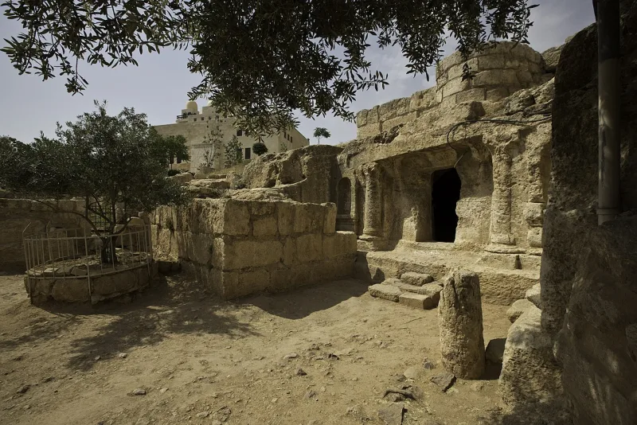
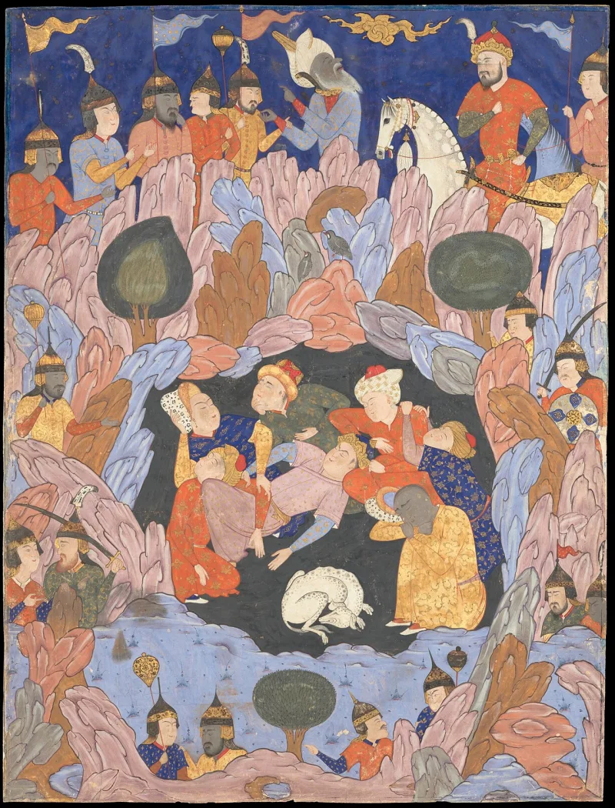

A rabbi's homily on Cain, in Allah's voice
UnrefutedNo good counter-argument has been published by Muslim scholars.
Three passages, three sources
Quran 5:32 says that whoever kills a soul, it is as if he killed all mankind. That is Mishnah Sanhedrin 4:5, a rabbi's homily on Cain, written centuries before Islam.
The Quran even keeps its framing: We decreed upon the Children of Israel. The raven who shows Cain how to bury Abel (5:31) belongs to the same cluster of Jewish material.
The other two
Quran 18:9-26 retells the Seven Sleepers of Ephesus. That is a Christian legend, attested in Jacob of Serugh, who died in 521, and in Gregory of Tours.
The dog and the disputed head-count are both there. Quran 21:68-69 has Abraham thrown into a fire.
That story grew out of Genesis Rabbah, from a play on words: Ur of the Chaldees read as ur, fire.
The Muslim answer, at full strength
Islamic Awareness answers on three fronts. A parallel is not borrowing; a common divine source or a shared true history would explain it.
Some claimed sources, such as Pirke de-Rabbi Eliezer, may be later than Islam, which would reverse the direction. And the Quran corrects as it retells: on the Sleepers, 18:22 rebukes idle guessing about the number, which shows judgment rather than copying.
On 5:32, they note the verse itself says the decree was given to the Children of Israel.
How strong is this argument?
Strong for you, because the dating holds where it matters. Mishnah Sanhedrin was compiled about 200 AD.
Genesis Rabbah is 5th century. The Seven Sleepers is firmly pre-Islamic in Jacob of Serugh.
Those three are secure whatever one says about Pirke de-Rabbi Eliezer.
Why that is hard to answer
Quran 5:32 is presented as Allah's decree. But it is identifiably a rabbi's inference from Hebrew grammar, drawn from the plural bloods of your brother.
And the Sleepers is a legend about the reign of Decius, not scripture. The correction in 18:22 concedes the story arrived as folklore.
What to say
"The line in Quran 5:32 is a rabbi's comment on Genesis. Would you like to see where it comes from?"



How they answer this — at its strongest
They say a shared story is not a copied one, and some sources may be later.
Islamic Awareness and similar apologists respond on three fronts. A parallel does not prove borrowing. A common divine source, or a shared true history, would explain the overlap just as well.
Some claimed sources may be later than Islam. Pirke de-Rabbi Eliezer, for the raven, is the example given. If so, the direction of borrowing reverses.
And the Quran corrects these accounts as it retells them. On the Sleepers, 18:22 rebukes guesswork about the number. That shows judgment, not gullible copying. On 5:32, they argue that Allah is confirming a truth he first gave to Israel's sages. That is no embarrassment. The verse itself says the decree was given to the Children of Israel.
The verdict
Strong for you: the dates hold where it matters most.
The dating defence fails where it matters most. Mishnah Sanhedrin was compiled about 200 AD. Genesis Rabbah dates to the 5th century. And the Seven Sleepers is firmly pre-Islamic in Jacob of Serugh. Those three are secure, whatever one says about Pirke de-Rabbi Eliezer.
The divine confirmation move cannot rescue 5:32. What the Quran presents as Allah's decree is identifiably a rabbi's inference from Hebrew grammar, drawn from the plural bloods of your brother. And the Sleepers is a legend about the reign of Decius, not scripture.
The correction at 18:22 concedes that the story arrived as folklore in circulation. No Muslim reply explains why revelation reproduces commentary.
Sources
- Gilchrist — Other Qur'anic Origins and Sources
- WikiIslam — Seven Sleepers of Ephesus in the Quran
- Mishnah Sanhedrin 4:5 (Sefaria)
- Wikipedia — List of legends in the Quran
- Wikipedia — Seven Sleepers